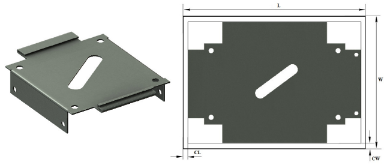

展開された板金パーツの長さおよび幅は、在庫として利用可能な標準シートサイズに従う必要があります。
各組織には、機械の能力や設備構成に基づいた標準または推奨シートサイズがあります。設計の初期段階において、設計者は展開シートサイズの可用性と、それに対応する在庫中の適切なシートサイズを把握しておく必要があります。これにより、在庫管理に関する意思決定がしやすくなります。間接的には、非標準シートサイズの種類を減らし、製造コストの削減にもつながります。
展開された板金パーツの長さおよび幅は、材料および板厚に依存する、製造で使用される推奨シートサイズの範囲内である必要があります。

ここで、
L = シート長さ
W = シート幅
CL = 長さ方向のトリミング余裕
CW = 幅方向のトリミング余裕
ユーザーは、Import ボタンを使用して、Excelシートテンプレート内の大量データをインポートできます。
標準テンプレート形式：
t |
L |
W |
1 |
250 |
100 |
2 |
500 |
100 |
3 |
750 |
100 |
ここでは、
t = 板厚
L = シート長さ
W = シート幅